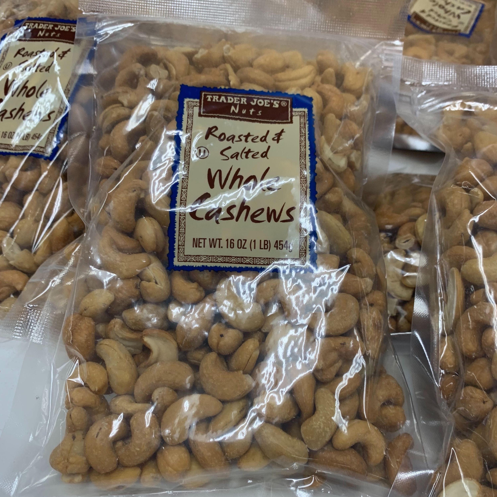
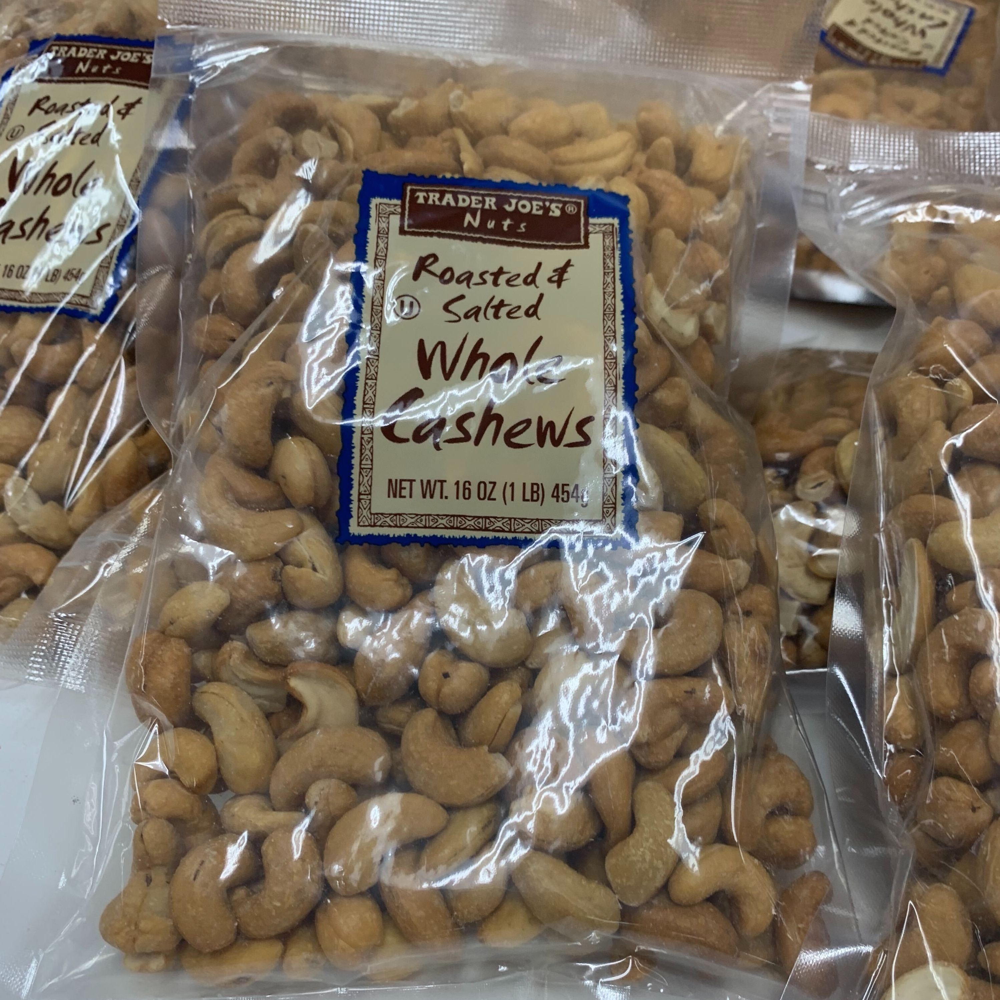
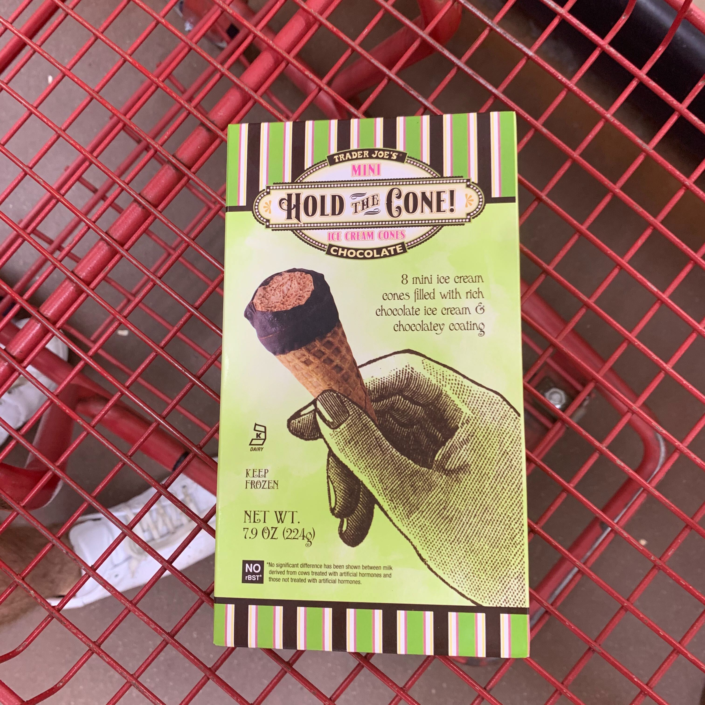
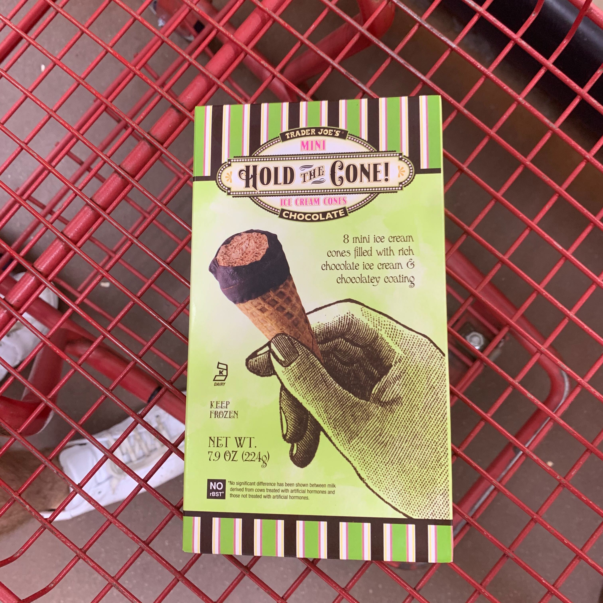

Introduction to Computer Systems
This course covers the organization of computer systems (in terms of storage units, caches, processors, and I/O controllers) and teaches you assembly and C language programming.
Course Information
CS0330 is taught by Professor Tom Doeppner (twd). Lectures are held every Monday, Wednesday, and Friday, from 2:00 to 2:50 PM via Zoom.
The course is intended primarily for computer science students and computer engineers, though it is open to anyone with adequate preparation interested in learning the topics covered in the course announcement. It fulfills a core requirement for the A.B. and Sc.B. tracks in computer science, and is required for the Computer Engineering concentration.
In order to take CS 33, you should have taken CS 15, CS 18 or CS 19 (or have Tom's permission). Familiarity with a C-like language (such as C++ or Java) will help you with this course. However, knowing C is not a prerequisite for the course.
"High-level computer architecture and systems programming. The course covers the organization of computer systems (in terms of storage units, caches, processors, and I/O controllers) and teaches students assembly-language programming and C language programming. Extensive programming exercises introduce students to systems-level programming on Linux systems, as well as to multithreaded programming with POSIX threads. Students will learn the basics of how compilers work and will be introduced to the functions of operating systems."
Guides & Documents
Check out the following useful documents for questions you have about course organization, code style, or tools we use.
Quick links
- Piazza (ask and answer questions)
- Canvas (grades)
- Anonymous Feedback Form
Assignments
If you're looking for hours for projects or labs, please see hours →
Projects
All projects are due at 11:59 pm EST on the specified due date. To accept your handin, we must have a collaboration policy signed and dated. To check if you have turned one in, please check this form →
| Name | Out | Due |
|---|---|---|
| Maze | 9/11 | 9/23 |
| Data / Example | 9/23 | 9/30 |
| Traps | 9/30 | 10/7 |
| Buffer | 10/7 | 10/19 |
| Shell 1 | 10/19 | 10/26 |
| Shell 2 | 10/26 | 11/2 |
| Malloc | 11/2 | 11/16 |
| Database | 11/16 | 12/10 |
Labs
Labs are released on Mondays – with a few exceptions. They will be done in pairs and can be completed on your own time or during lab hours. During lab hours, you will be able to work with others and get help from TAs. You must complete each lab and have it submitted via Gradescope by 11:59 pm EST the night they are due. Submissions during the week after that in which a lab was assigned will receive half credit.
| Name | Out | Due |
|---|---|---|
| Lab 1: Setup and GDB | 9/11 | 9/20 |
| Lab 2: Strings and Parsing | 9/20 | 9/27 |
| Lab 3: atoi | 9/28 | 10/4 |
| Lab 4: Makefiles | 10/5 | 10/11 |
| Lab 5: Signals | 10/23 | 10/29 |
| Lab 6: Alloc | 10/30 | 11/7 |
| Lab 7: Networking | 11/9 | 11/17 |
| Lab 8: Concurrency | 11/16 | 11/22 |
Homeworks
Homeworks are required for graduate students taking the course, and optional for everyone else. Only homeworks submitted by graduate students will be graded. You can submit your homework through Canvas. If you have questions about the homework, please attend Tom's office hours.
| Name | Out | Due | Supplementary Files |
|---|---|---|---|
| HW1 / Solution | 9/11 | 9/17 | [Recording] |
| HW2 / Solution | 9/18 | 9/24 | [Recording] |
| HW3 / Solution | 9/25 | 10/1 | [Recording] |
| HW4 / Solution | 10/2 | 10/8 | [Recording] |
| HW5 / Solution | 10/9 | 10/15 | [Recording] |
| HW6 / Solution | 10/16 | 10/22 | [Recording] |
| HW7 / Solution | 10/23 | 10/29 | [Recording] |
| HW8 / Solution | 10/30 | 11/5 | [Recording] |
Lectures
Lectures are held every Monday, Wednesday, and Friday via Zoom. Check the Canvas page for the Zoom link.
| Date | Topic | Readings | Notes | Recording | Take Away Questions | Code |
|---|---|---|---|---|---|---|
| Sept 9 | Intro to CSCI 330; Intro to C | [Slides] [Notes] | [Recording] | [Questions] | ||
| Sept 11 | Intro to C | [Slides] [Notes] | [Recording] | [Questions] | ||
| Sept 14 | Intro to C | [Slides] [Notes] | [Recording] | [Questions] | ||
| Sept 16 | Intro to C | [Slides] [Notes] | [Recording] | [Questions] | ||
| Sept 18 | Intro to C | [Slides] [Notes] | [Recording] | [Questions] | ||
| Sept 21 | Intro to C | [Slides] [Notes] | [Recording] | [Questions] | ||
| Sept 23 | Data Representation | Chapter 2 | [Slides] [Notes] | [Recording] | [Questions] | |
| Sept 25 | Data Representation | Chapter 2 | [Slides] [Notes] | [Recording] | [Questions] | |
| Sept 28 | Data Representation | Chapter 2 | [Slides] [Notes] | [Recording] | [Questions] | |
| Sept 30 | x86 Assembler Language | Sections 3.1, 3.2 | [Slides] [Notes] | [Recording] | [Questions] | |
| Oct 2 | x86 Assembler Language | Sections 3.4, 3.5 | [Slides] [Notes] | [Recording] | [Questions] | |
| Oct 5 | x86 Assembler Language | Section 3.6 | [Slides] [Notes] | [Recording] | [Questions] | |
| Oct 7 | x86 Assembler Language | Section 3.7 | [Slides] [Notes] | [Recording] | [Questions] | |
| Oct 9 | x86 Assembler Language | Section 3.10 | [Slides] [Notes] | [Recording] | [Questions] | |
| Oct 12 | Holiday! | |||||
| Oct 14 | Architecture and OS | Sections 8.1-8.4 | [Slides] [Notes] | [Recording] | [Questions] | |
| Oct 16 | Shells and Files | Section 10.1 | [Slides] [Notes] | [Recording] | [Questions] | |
| Oct 19 | Files | Sections 10.2-10.11 | [Slides] [Notes] | [Recording] | [Questions] | |
| Oct 21 | Signals | Sections 8.5-8.6 | [Slides] [Notes] | [Recording] | [Questions] | |
| Oct 23 | Signals | [Slides] [Notes] | [Recording] | [Questions] | ||
| Oct 26 | Memory Management | Section 7.1-7.9 | [Slides] [Notes] | [Recording] | [Questions] | |
| Oct 27 | Memory Management | Section 9.9 | [Slides] [Notes] | [Recording] | [Questions] | |
| Oct 30 | Virtual Memory | Section 9.9 | [Slides] [Notes] | [Recording] | [Questions] | |
| Nov 2 | Virtual Memory | Sections 9.1, 9.2, 9.6, 9.8 | [Slides] [Notes] | [Recording] | [Questions] | |
| Nov 4 | Libraries | Sections 7.10-7.13 | [Slides] [Notes] | [Recording] | [Questions] | |
| Nov 6 | Network Programming | Sections 11.1-11.4 | [Slides] [Notes] | [Recording] | [Questions] | tcpClient.c udpClient.c tcpServer.c udpServer.c |
| Nov 9 | Network Programming | [Slides] [Notes] | [Recording] | [Questions] | ||
| Nov 11 | Concurrent Programming | Chapter 12 | [Slides] [Notes] | [Recording] | [Questions] | |
| Nov 13 | Concurrent Programming | [Slides] [Notes] | [Recording] | [Questions] | ||
| Nov 16 | Concurrent Programming | [Slides] [Notes] | [Questions] | |||
| Nov 18 | Concurrent Programming | |||||
| Nov 20 | Concurrent Programming | |||||
| Nov 23 | Conclusion |
Project Gear Ups
Looking for guidance as you start your project each week? Want a refresher on what material has been covered and an outline of what you will be writing? Come to our Project Gear Up Sessions! We’ll also be going over how to use the demo(s) and tester(s) and other relevant scripts for each project!
For each project, we will hold a Gear Up session a day after it is released. All Gear Up sessions will be held via Zoom, and check the course calendar for time and Zoom link. Come prepared with questions!!
| Date | Topic | Slides | Video |
|---|---|---|---|
| 9/12 | Maze | Slides | Video |
| 9/24 | Data | Slides | Video |
| 10/1 | Traps | Slides | Video |
| 10/8 | Buffer | Slides | Video |
| 10/20 | Shell 1 | Slides | Video |
| 10/27 | Shell 2 | Slides | Video |
| 11/3 | Malloc | Slides | Video |
| 11/17 | Database | Slides |
Hours
Tom's Office Hours
Professor Doeppner's hours will be held via Zoom. Check the course calendar for the Zoom link.
| Monday | 3-4pm |
| Wednesday | 3-4pm |
| Friday | 4-5pm |
TA Hours
During TA hours, you'll be able to get help from TAs with course concepts as well as project and lab-specific questions. Note that you may not ask questions about labs in project hours (and vice versa) or have a lab checked off during project hours. During conceptual hours, you may not bring up code-specific questions.
Signing Up
Sign up for TA hours via signmeup.
Staff
Professor
 

Tom Doeppner
twd
he/him/his
Tom has been at Brown CS since its inception (not Brown's, but Brown CS's). He personally installed Brown's first UNIX system and has been into systems ever since. When not doing CS, he likes photography, which he prefers to do underwater, but now does mostly on land.
HTAs (cs0330headtas@lists.brown.edu)
Daphne Li-Chen
dlichen
she/her/hers
Hello! I'm a senior from Scottsdale, Arizona concentrating in Computer Science. I love doing theater (especially musicals), hiking, camping, and doing some photography. Also I very highkey miss the CIT 3rd floor atrium and getting to see all my friends instead of doing any work, yet still feeling productive because I was in the CIT. My favorite snack is mochi!
Ethan Sattler
esattler
he/him/his
Hi! I'm a senior concentrating in Computer Science from Arlington, VA! I enjoy reading, Formula 1 racing, and Operating Systems.
Jason Fischman
jfischma
he/him/his
Hey everyone, I'm a senior studying CS-Econ and I'm from Newton, MA. I'm more of a Whole Foods guy but don't tell the rest of the TAs.
Star Su
ssu6
she/her/hers
Hi! I'm a senior from Ann Arbor, MI. I like reading, writing, taking long walks, and eating yummy food. Sometimes, concurrently.
UTAs (cs0330tas@lists.brown.edu)
Aalia Habib
ahabib3
she/her/hers
Hey everyone! I'm Aalia :) I'm a junior from Pakistan and if I'm not eating rice I'm eating rice puffs
 

Andrew Kopplin
akopplin
he/him/his
Hi, I am a senior from Albany, NY double concentrating in CS and Biology. Outside of class I am captain of the club hockey team and enjoy hanging out with friends. My favorite Trader Joe's snack has to be the mini ice cream cones.
Ben Smith
bsmith28
he/him/his
Hey everyone! I'm a 3rd year from Wisconsin. I like hiking, having fires, playing piano, and my favorite snack is chips and dip.
Cam Wenzel
cwenzel
he/him/his
Hey guys, I'm Cam! I'm a junior studying CS and Econ from north of Philly. Outside of class I'm a long distance runner and I know basically everything there is to know about cars. Can't wait to meet you all on Zoom!
Casey Nelson
cnelso13
she/her/hers
Hi, I'm Casey! I'm a senoir from NJ studying CS. I have a major caffiene addiction, so if I were a Trader Joe's snack I would be Chocolate Covered Espresso Beans.
Charlie Gagnon
cgagnon1
he/him/his
"From the time I first rode on a trike
There's but one snack I've found cause to like
From its slippery peel,
to its shape of an eel
That banana's for me!
(not for Mike)
I'm Charlie, I'm a junior from Natick, MA, and I approve this limerick."
Daniel Civita Ramirez
dcivita1
he/him/his
Hi everyone! I am a junior from São Paulo, Brazil, concetrating in CS and Econ. Outside of class, I like to spend time with my friends, play soccer, and cook. Noting beats the a bag of chips and the Queso Fundido Spicy Cheese Dip.
Ell Li
sli96
she/they
Hi! My name's Ell and I'm a junior studying computer science with a focus on software design and full-stack development! I also enjoy art, neuroscience, and dried strawberries in my free time. Come chat with me about cool projects you're working on or your favorite programming languages (it's ok if it isn't C)!
Floria Tsui
ftsui
she/her/hers
Hi! My name is Floria, and I'm a sophomore from Ann Arbor, MI. I love eating, reading, sleeping, and I love eating potatoes in all of its myriad forms, hence, my favorite snack are these spud crunchies from Trader Joes
Hans Bala
hbala
he/him/his
Hey everyone! I’m a junior coming straight outta India! Outside class I enjoy shooting pool, and if Brown allows it, you’ll probably find me at the blue room pool tables! I also have a major major sweet tooth so if I had a choice, I would be cookie and cocoa swirl spread!


Ian Layzer
ilayzer
he/him/his
Hi! I'm a Junior from Durham, North Carolina concentrating in Computer Science. I love playing frisbee and watching (and sometimes participating in) student theater on campus. My favorite snack is popcorn!
James Pirozzolo
jpirozzo
he/him/his
Oh hey, didn't see you there. I'm James, great to meet you! I grew up in Brookline, Mass and in my free time I like getting outdoors, cheffing up some grub, or just hanging out with friends. Pumped to be your TA!
Jian Cong Loh
jloh4
he/him/his
Hi, I am Jian Cong/JC! I am a Junior from Singapore, studying CS and International Relations. Outside of class, I enjoy working out, seeking out good food, and having heated debates on politics and current affairs over some drinks (legally). Coffee is my lifeblood and I have a sweet tooth, so if I were a Trader Joe's snack, I would be a Cold Brew Latte Dessert Bar.
Justin Sanders
jsander8
he/him/his
Hey, I'm Justin. I'm a junior from Seattle concentrating in Computational Biology. I'm a big fan of downhill skiing, chess, and the tragically discontinued Trader Joes sriracha bacon jerky.
Jusung Lee
jlee418
he/him/his
Hi! I'm a junior from Boise, Idaho trying my best to concentrate in CS and English. At Brown, I also edit for BJWA and practice piano very infrequently at Steinert. Big fan of Cheeto Puffs, the puffier the better.
Maggie Beardsley
mbeards1
she/her/hers
Hi! I'm a junior from Vermont concentrating in Applied Mathematics and Computer Science. I like skiing and hiking and my favorite Trader Joe's snack is mini tacos! See you on zoom :)
Marina Triebenbacher
mtrieben
she/her/hers
Hi everyone! My name is Marina, and I'm a Junior from NY studying CS. When I'm on campus, you can usually find me in a Blue Room booth, watching Netflix comedy specials, or drinking copious amounts of coffee (specifically Trader Joe's Cold Brew!). I'm super excited to be your TA this semester!
Maya Taylor
mtaylo12
she/her/hers
Hi, I'm Maya! I'm from Albuquerque, NM and I'm a junior studying APMA-CS. In a normal semester, you'd find me living in B&H drinking chai oatmilk lattes, in Steinert/Alumnae doing various music things, or riding horses on Brown's Equestrian team. I really only eat things with choclate in them, and chocolate peanut butter is the best combo.
Melissa Wang
mwang108
she/her/hers
Hi! I'm a junior from San Diego, CA studying APMA-CS. Outside of class, I enjoy cooking, drawing, and experimenting with motion graphics. I love anything with cherries so my favorite Trader Joe’s snack is their ~Soy Creamy~ cherry chocolate chip ice cream :)
Milanca Wang
mwang102
she/her/hers
Hi, I'm Milanca! I'm a junior from Tennessee concentrating in CS. Outside of class, I like to cook, nap, write, and watch conspiracy videos about space! I've never actually been to Trader Joe's (my city doesn't have one, sorry), but from what Google shows me, the freeze dried berry medley looks pretty nice!
Rachel Fuller
rfuller1
she/her/hers
Howdy! I'm a rising junior from Austin, Texas. (I don't usually say Howdy) I study CS, and I'm taking the semester off. In my free time I do mock trial, go running, and shop at Trader Joe's.
Rachel Yan
ry22
she/her/hers
Hi! I'm a junior from the Bay Area studying CS and Internation and Political Affairs. I love penguins, politics, and Philz coffee :)
Sarah Rockhill
srockhil
she/her/hers
Hi! I'm a junior from NY concentrating in Computer Science. My hobbies include eating and asking what food you're eating so you offer me some. I love chilli + lime on anything!
Selen Tumay
stumay
she/her/hers
Hello :0 I am a junior from south florida majoring in CS and Econ. In my free time I like to make string bracelets and do the nyt crossword. I <3 dried mango for snack
Shalan Billault-Lee
sbillaul
she/her/hers
Hello hello, I’m a junior studying CS from San Francisco. I love road tripping and adventuring in the nature. I’m always down to hit up the Goodwill outlet or go rock climbing. Also, I LOVE cats.
Sharon Alexander
salexan2
she/her/hers
Hi, I'm a Junior from Israel studying CS-Econ. I love dancing, the beach, and sunshine. I also low-key miss the CIT. I may or may not have been nicknamed "the piazza queen" in the past. I haven't been to Trader Joe's but would love their chocolate covered peanut butter pretzels.
Symone Houston
khousto1
she/her/hers
Hello! I'm a senior from Houston, TX concentrating in Computer Science and Economics. I'm a Diversity and Inclusion advocate for the CS Department. I love baking and trying new foods. My favorite snack is boba.
Trisha Ballakur
tballaku
she/her/hers
Hey everyone! I’m a junior concentrating in CS and Entrepreneurship, and I love meeting new people! If we were back on campus, you’d likely find me roaming all floors of the CIT with my friends, singing with my acapella group (Barsaat), performing in my dance team (Badmaash), and relaxing amidst the haven of books in the Athenaeum. As a self-proclaimed representative of Trader Joe’s (yes, I am always spotted holding their shopping bags and I’ve even used their holiday edition bag as gift wrap for Secret Santa presents), it was tricky to chose just one product. But, the absolute cuteness (and tastiness) of TJ’s Honey Hedgehog Cookies makes them a snack that you simply must C and try! :)